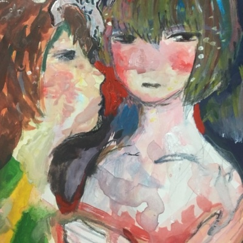

GOLDEN☆BEST 渡辺満里奈 - marina watanabe
type: compilation
genres: city pop
date released: 28 april 2010
i stumbled upon durango.neocities.org which had 見つめてあげたい embed on it's homepage.
i really liked the song! when i searched it on spotify and saw it was part of a 'best album' so i decided to check the entire thing out while i spent my time coding.
and wow was it so so lovely!!! i even recommended it to my bf who likes city pop as well. all of the songs here are so lively!! i can't help but swing my body side to side as i was listening to these. marina watanabe's voice is super lovely as well!
highlights: マリーナの夏, 大好きなシャツ (1990 旅行作戦), 見つめてあげたい, ホワイトラビットからのメッセージ
links: cdjapan
rating: 

listened on 29.oct.23, published 30.oct.23
voca works - erbatur
type: album? compilation?
genres: breakbeat, edm
date released: 26 october 2023
been keeping up with this artist for a while now! i had found them through a siinamota's halo remix that i liked very very much. i thoroughly enjoy the work they have produced as well as their remixes.
on to the release itself: it's very nice indeed!!! i love how energetic their music is while also keeping that.... like emotional tone to them IDK how to explain but yeah.
loved the strobe last remixes a ton. but the highlight of this mini is 異邦ツチノコ, which i had been listening to a clip they shared on twitter for a couple of months now. it was a pleasant surprise to have the full song here!
for their original songs, a real standout is miku opera which opens with some piano keys followed by miku's "la la la" and while the track itself is short i still really enjoyed it. it has a very playful and dance -y vibe to it compared to the other tracks.
i'm pretty excited to see their future works!
highlights: 異邦ツチノコ, miku opera, カトラリー (Erbatur remix), さよならストロボBreak
rating: 
listened on 26.oct.23, published 27.oct.23
ロンググッドバイ - きのこ帝国 (kinokoteikoku)
type: EP
genres: dreampop, jrock, shoegaze
date released: 4 december 2013
this EP has been on my 'to-listen' list for over a year, i'm pretty sure, after listen to its title track and loving for so long. and just !!!
there's such an energy to this while also being very soft to listen to... i'm not sure how to explain it. also the vocalist has a gorgeous voice tbh. i loved listening to this! i will probably check out this band's other stuff in the future :3
also i love the album cover. it's very simple. but i find it radiating a very sweet feeling.
highlights: flower girl, ロンググッドバイ, パラノイドパレード
rating: 
listened on 22.oct.23, published 24.oct.23
vision getting blurred - bebe yana
type: EP
genres: kpop, liquid D&B, alt R&B
date released: 11 october 2023
wow. i think this might be my new favorite songs from bebe yana... this is excellent!
side A is very smooth and soothing, while side B has a bit more rhythm do it with what its reggaeton type beat sound in the instrumental. at first i couldn't help but roll my eyes at this... i dislike reggaeton. a lot. growing up with it, i just do not have a lot of nice memories with that genre.
but to my surprise, i actually enjoyed side B... a whole lot! i thought it would sound a bit out of place but i was surprised at how well they managed to make it sound. i had thought they had just thrown in there the reggaeton instrumental and be done for the day but NO! it has a lot of key difference in comparison to side A. which i think its also what made it so enjoyable for me. it sounds... denser.... and i'm not even sure which one i prefer the most!
rating:
listened on 22.oct.23, published 24.oct.23
終末エンドロール - kinoue64
type: album
genres: shoegaze
date released: 16 october 2023
a new album from one of my favorite vocaloid producers!!!!
i liked it :) and i think it might grow on me the more i listen to it.
a song that kinda made me jump (/POSITIVE) was 飲む (nomu) for its use of breakbeats! i've never heard a kinoue64 song use that kind of instrumental before! and it was a very pleasant surprise while listening to this.
the rest is just more mizugaze. i've been noticing lately that i do tend to lean more towards his more "softer" shoegaze songs... which are mostly the ones highlighted from this album.
anyway, i always welcome new kinoue64 songs with open arms, so this was very pleasant to listen to as always.
highlights: 飲む (nomu), 途中下車 (stopover), ゆれうごく (yureugoku), 終末エンドロール (syūmatu endroll)
rating: 
other links: spotify
listened on 20.oct.23, published 24.oct.23
new edition 55 - 015B
type: single
genres: kpop
date released: 18 october 2023
everyone in a while i always see this duo, 015B, pop out singles like on a bi-montly basis. so i always go ahead and listen to them to check out what's new. most of these are always alright. though, sometimes there are some gems here and there!
and this one was very nice! i love the little dnb beat that they added in the outro.
but i do want to critique how they have been adding sped up versions in their singles (alongside the instrumental) ever since early this year.... it makes me roll my eyes every time i tune in to one of their new singles. but whatever i guess... i pretend they don't exist.
rating: 
listened on 20.oct.23, published 24.oct.23
howl - chuu
type: EP
genres: kpop,
date released: 18 october 2023
CHUU !!!!! KPOP'S BELOVED CHUU is HERE!!!! with her debut EP :3 
man i love chuu. all of these songs are very cutesy pop songs, they're nice! but they are just that for me. while a pleasant listening experience, i don't find them that memorable.
but honestly, i am just happy chuu is free from the evil that is blockberry creative. that is main the main reason why i'm not that disappointed in the direction that EP went.
i still haven't watched the MV but i did watch a stage performance of the title track... and man just seeing chuu happy and singing and dancing just warms my heart.
stage performance video
i might have not enjoyed this as much as i wanted, but i am super happy for chuu!
highlights: howl, my palace, hitchhiker
rating: 
listened on 19.oct.23, published 24.oct.23
my bed - dosii
type: EP
genres: alt R&B
date released: 14 october 2023
i don't have much to say about this one but this is so beautiful!!!!!!!!!!
i like this duo very very much!!! i've already listened to their 1st EP: 반향 (echo) and it was very nice as well. i am just missing their self titled debut album :3 maybe i'll listen to it soon!
one of those albums that is perfect to listen to as you're falling asleep
highlights: my bad, run, maniac
rating: 
listened on 17.oct.23, published 18.oct.23
⟡ - tripleS / EVOLution
type: EP
genres: kpop, dancepop, future bass
date released: 11 october 2023
re-listening to this, this is actually a very decent release. but my good lord did listening to fiesta 2.0 kinda put me off at that moment  i remember listening to rhodanthe and thinking "why does this sound like something i've heard a 1000 times before?" ...... i did some digging THINKING that whoever made that song just wanted to copy fiesta. to my surprise this was not the case. the composer of fiesta did in fact also write rhodanthe. which just leaves me so ????
i remember listening to rhodanthe and thinking "why does this sound like something i've heard a 1000 times before?" ...... i did some digging THINKING that whoever made that song just wanted to copy fiesta. to my surprise this was not the case. the composer of fiesta did in fact also write rhodanthe. which just leaves me so ????
NO, i don't think it's that serious, but it baffles me that a PRODUCER would write a song that's ALMOST a clone of a song they wrote for group A and give it to group B ??? i feel like it's one thing is to plagiarize and another thing is to copy paste your own work.... with another group  which is so so so lazy... i could not believe i was listening to fiesta 2.0 in a tripleS EP. anyway moving on from rhodanthe....
which is so so so lazy... i could not believe i was listening to fiesta 2.0 in a tripleS EP. anyway moving on from rhodanthe....
i loved the intro and the title track!!! i wished they leaned more into the sounds that you hear in their intros and outros.... and i get why they just that, but i feel we could some crazy good stuff if they let the prod team use that song for bsides or even a title track!!! the title track: invincible has this 'soft' dancefloor dnb beat to it that was genuinely a very pleasant surprise to me. i love dnb beats!!! and while i feel like kpop is not exactly there in it's use of the sub-genre, i do appreciate the rise in use of breakbeats, and other dnb beats in their songs. they are trying which is the important part.
for bsides in this EP, the highlight would definitely be moto princess. super groovy and catchy. i really like it! these tripleS releases aren't exactly my favorites, but hidden gems like really make the listening experience much more enjoyable. but really, i would KILLED for a full song like enhanced flower. my goodness
overall thoughts: a very okay release! with a exclamation point! i liked most of the songs in this and the only thing that made me roll my eyes and shake my head in disagreement was rhodanthe. so i guess this is a low key win?
highlights: moto princess, invincible, enhanced flower
rating: 
listened on 13.oct.23, published 18.oct.23
the name chapter: freefall - tomorrow x together
type: album
genres: kpop, pop rock, dancepop
date released: 13 october 2023
okay. i think for the most part i kinda did enjoy this but ehhh?
txt's rock sound has never interested me (unless it's something that sounds like ghosting) a lot. and i kinda hope we would leave that era behind after having quite a couple rock centered releases but... i guess i was wrong
i yearn for the return of what i lovingly call gay txt songs (ex. rollercoaster, drama). i guess chasing that dream will be the closest thing i'll get to a song like that.
i don't think the singles like back for more and do it like that were that necessary to include here. for such a rock heavy release, i really do not see the need of adding the 2 nu-disco COLLAB...... singles. skipped them as soon as they played. i've listened already. don't need to go through that again. i really don't know what's wrong with big hit.... i know those two singles are mostly made for the western audience but like... they do know that western audiences enjoy other genres other than nu-disco, right?? RIGHT????? anyway, i am sick of these types of nu-disco songs.
BACK TO THE ALBUM: i enjoyed (most of) the bsides more than the title track! chasing that dream is cute... but it's kinda just that for me. dreamer is probably the song i liked the most from this album. it feels like something i would call a little gay txt song. i like it. actually that run from track 4 to track 7 is pretty damn good for me. though, i do have to admit that some songs here feel a bit out of place because of the rock concept this album has going on for it. i am looking at you deep down. I LIKE THIS SONG! this would go crazy on a gay club, but it's inclusion on this album is kinda ? i can understand to some degree the synthpop title track, but i draw the line at a deep house song.
overall: i see a pretty decent EP in this, but yeah that is pretty much it.
also the music video looked so ugly. it's professionally made I GUESS but where are the colors? it was clearly very inspired by the movie inception which i get but like... good lord i thought we (me) would have something better than this.
highlights: dreamer, happily ever after, deep down, skipping stones
rating: 

listened on 14.oct.23, published 16.oct.23
the book 3 - yoasobi
type: album
genres: jpop
date released: 4 october 2023
im sorry but WHAT?!?!?!?!?!? a yoasobi song that sounds different ?!?!? 勇者 was so good wtf. great opener
but sadly i don't have much else to say about the rest. i keep bullying yoasobi (ayase in particular since he is the producer of yoasobi) for their lack of .... variety?? in their discography. but at this point i will just sound like a scratch disc if i keep repeating the same thing over and over again: they only know how to make 3 songs at max.
i'm also a bit of a hypocrite since i do enjoy most of these songs. at least for the most part.
but i do have a bone to pick with this album: its interludes. they are just longer intros of the songs that proceed them. i really don't see the point of them being in this album. was it just so it could have a longer tracklist? i really don't know.
final thoughts: i guess i enjoyed this to some degree. but it feels a bit messy... definitely prefer book 2 over this one.
highlights: 勇者, idol
rating: 

listened on 11.oct.23, published 14.oct.23
love effect - ONF
type: EP
genres: kpop, dancepop, contemporary R&B
date released: 4 october 2023
congrats to my boys for getting out of war!
sadly this release, while very nice and all, it's not for me. there is some highlights like arrival and the title track: love effect that were pretty fun and groovy to listen to! but the rest of the EP was just very meh to me. especially because i know the bangers that monotree and the rest of the production team can make for ONF's discography.
but overall, i'm pretty happy they are back! i hope they release something a bit more of my taste next time.
highlights: arrival, love effect
rating: 

listened on 7.oct.23, published 9.oct.23
スイート Q ラブ - SEAPOOL
type: EP
genres: jrock, noise pop
date released: 18 october 2018
love the intro and outro tracks. so sweet and nostalgic. the songs in between also bang as well. mostly サマースクール though. funnily enough the title track was the song i liked the least? or maybe i didnt get it first listen...
anyway, i do love the mix between the sweet intro and outro, alongside the jrock almost noise pop songs. honestly, very interesting mix! i really liked it
also the album art is very beatiful to me. i love that painting
highlights: mu, サマースクール, toukou, picnic
rating: 
listened on 5.oct.23, published 6.oct.23
( ^ω^ ) - zzkillme
type: album
genres:drum n bass, ambient
date released: 7 july 2023
CAT THEMED DNB ALBUM??? oh FUCK yes. thank you
anyway, this was a very chill lp! i listened to this as i was cleaning my bedroom :3 very nice for when you want something in the bg
highlights: meowcore (0.0), miku, afex twin, kittypasta ^_-, uwa demo, :3, total katastrophe
rating: 
listened on 2.oct.23, published 5.oct.23
target: ME - EVNNE
type: debut EP
genres: kpop, pop rap, dancepop
date released: 19 september 2023
very solid debut! like this is definitely a quality release from a new group
while most of these aren't for Me I DO see the vision and this EP definetly brings sounds that haven't been used in kpop a whole lot like the turntable scratches in role model. overall i really like the instrumental for most of these songs, but the rap just kinda gets me out of it. still, i'll keep an eye out for this group's music!
highlights: role model, jukebox
rating: 

listened on 01.oct.23, published 01.oct.23